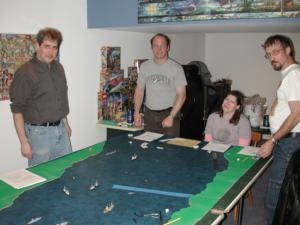

This ACW naval miniatures scenario was played at EdCon X in February, 2003. We did the same scenario last year, and a stripped-down version the year before that, too. It's time for a change next year, but there were still enough surprises this time to keep it interesting for the referee. It seemed like the players had fun, too.
Of course the big advantage to repeating a scenario is how much easier it was for me to prepare. Last year I spent the week before the game frantically assembling terrain, painting up models, preparing log sheets, writing up the scenario, etc. This year I just made a few more printouts and reread the rules. Much more relaxing!
Rules used: Smoke on the Water, with 1/600 ships from Thoroughbred Models. Photos are again courtesy of Peter Giancola. Thanks, Pete. We'll make sure that we get a shot of you next year!
Some background material about the battle that we're playing is available on last year's report. Also you can see the Union and Confederate scenario sheets, and some refereeing and order of battle notes based on last year's experience.
(Click on the images for a better view)
At the west side of the map are the Confederate commanders, Matthew Beach (front) and Andy House (back), with me apparently mesmerized by the Virginia II. Pete Giancola joined Andy and Matthew in command, but he's hidden behind the camera. The only ships starting on the map are, from left to right, Drewrey, Richmond, and Virginia II, which begin grounded and must roll to break free. The remainder of the Confederate squadron begins offmap and may enter on the first turn.
The Confederates used 8 points of
scenario options: torpedo outriggers
on the ironclads, a local pilot on the Virginia II, and Battery Dantzler.
 To the east are the Union commanders: Tito Autrey, Romana Autrey, and Rick Barber. This picture's taken a few turns in, so the map is much busier than in the last picture. I don't like to jump ahead, but this is the best cast shot of the Federals that I have.
The Union squadron consists of just one ironclad, Onondaga, aided by two paddlewheelers, Hunchback and Massasoit. They begin offmap and can only enter by dieroll.
The Union commanders chose 7 points of scenario options: Battery Wilcox, one Torpedo Boat, and Psychological Warfare. The latter is represented by the four pennies that can barely be seen in the picture, deployed near the gap in the obstructions (the blue masking tape). They have no effect on play -- their sole purpose is to make the Confederates worry a bit.
You can just see Battery Wilcox underneath Rick's hand, with the
hex tile and artillery pieces courtesy of his Battle Cry set.
The game opens with a fair bit of dierolling, as the Confederates try to get their stuck ships underway, and the Union players try to get their ships on the map. In a near carbon copy of last year, the Drewrey and Virginia II freed themselves early, while the Richmond sat there....and sat there, not freeing itself 'til turn 5. The rest of the Confederate ships entered on turn 1.
This picture was taken from behind them at the end of turn 1. From left to right: Fredericksburg, Wasp, Hornet, Virginia II, Torpedo, Hampton, Drewrey, Richmond. Yes, it's mildly confusing that Torpedo is not in fact a torpedo boat.
Were I to run this scenario again, I would probably make the other Confederate
ships enter by dieroll rather than allowing them all to enter on turn 1. Perhaps they'd require a
6-10 to enter on a d10? It would certainly make things a bit less predictable, which is always good,
but it would also promote a more realistic distance between the ships.
Last year the Union ships had trouble getting on board, but there was no such problem this time, as despite the need for dierolls they got on map as quickly as possible. Here you can see the beginning of turn 2, with Hunchback entering in the middle of the river with Onondaga to the north.
The Confederates opened fire at extreme range, and were rewarded for their
efforts by an explosion of the Fredericksburg's forward heavy rifle. Not an auspicious start
for the Confederates.
The following turn a torpedo boat and the Massasoit entered the map near the southern bank, while the Confederates advanced all across the river. Hornet and Hampton swung towards the north bank, Drewrey and Wasp decided to risk crossing the obstructions in the south, and the ironclads came up as quickly as possible behind Torpedo in the center.
Confederate gunfire homed in on the Hunchback and caused a fire.
This year was the first time we played using shell ammo as well as solid shot. As a result, the
wooden ships really took a beating. The Fire Check caused by a successful
shell detonation started quite a few fires, perhaps more than might be historically warranted.
I'd be tempted in the future to tone down the fires a bit.
Here's Hunchback in it's misery. Not much more to add here. I just
think it's a cool picture.
Here's the same position viewed from the east. Note Battery Wilcox (lower left),
stranded Richmond at the far end of the table, and Andy's apparent interest in my shoes. (We were
looking at some spare ironclad models on the ground in the corner, and I was too lazy to point with my fingers.)
Things really started to get interesting the following turn, as Andy came within a few millimeters of ramming the Onondaga with a torpedo boat. We had to resolve the movement phase one centimeter at a time to figure out whether the ships collided or not. Somewhat anticlimatically, though to Tito's relief, the slow-mo replay showed that they didn't.
In the center, Drewrey got stuck trying to cross the obstacle line.
After the picture was taken, we noticed that the two torpedo boats just
east of obstacles must have collided during movement. C.S.S. Wasp survived the subsequent
collision resolution. U.S.S. Torpedo Boat #1 was not so lucky and fell apart.
Completing movement didn't end the excitement, though. The wooden ships took their usual beating, but Hunchback's foreward gun exacted a heavy toll on the Confederates, as her single shot hit Fredericksburg. The hit location roll resulted in a critical hit, which turned out to be a Special critical hit, which resulted in a "Magazine Explodes" result, which Fredericksburg's heavy hull armor failed to deflect. Result: the ironclad Blowed Up Real Good. I compute that as a 1 in 8,000 odds. Nice dicing, Romana. (Rick pointed out that the earlier exploding gun on board Fredericksburg must have caused more damage to the ship than we thought.) Nearby Virginia II is close enough to the explosion to get a Fire Test marker.
In return, Hunchback lost a paddlewheel and a lot of hull points.
Hampton (in the middle background) bravely masks Onondaga, but as a result is also the lucky
recipient of a Fire Test Marker and a lot of damage.
This picture shows the situation after all fire was complete. The Confederates
have lost one ironclad entirely, have potential fires aboard two of their gunboats and a second ironclad,
and have grounded a third gunboat and third ironclad. In return the Union has an essentially
out-of-commission Hunchback and a lost torpedo boat. Things are looking pretty grim for
the Confederate squadon, no?
But what a difference a turn makes! The gunboats managed to extinguish their fires and the grounded ships finally came unstuck. In further good news for the Confederates, Onondaga did not steer sufficiently clear of the out of control Hunchback, and so collided with it.
At the other bank of the river Massasoit rammed the Wasp, turning it into matchsticks, but then grounded itself. This was probably not the Union players' favorite turn.
Note that Torpedo has turned away -- presumably from the threat of
Battery Wilcox -- and is actually heading northwest. Likewise Hornet, the sole torpedo boat
on the map, is circling back towards Onondaga.
The following turn was no kinder to the Union, as Massasoit remained stuck and Hornet landed a beautifully placed torpedo hit on the Onondaga. Fortune finally took pity on the Union as the torpedo turned out to be a dud so the Union vessel escaped with minimal damage. Still, the collisions had prevented Onondaga from firing for two crucial turns, as the Virginia II slipped by en route to the map edge.
Which the Confederate gunboats were racing for, too. Over
the next few turns Drewrey and Torpedo escaped more or less unscathed. Battered
Hampton was racing against time, or more properly the shells from Battery Wilcox,
and just barely managed to get off before being sunk.
And yet another aggravating turn for the Union followed. Massasoit finally broke free, but Onondaga ran aground on the edge of the obstructions -- another turn of not firing! Tubby Richmond finally made it into the battle.
Also now able to participate was the Confederates' Battery Dantzler, off map
to the west. For game purposes it's a single heavy rifle shot at extreme range anywhere on the
western side of obstructions. It fired away at Onondaga enthusiastically, but without effect over
the next few turns.
And now the fourth consecutive turn of pain for the Union, as Onondaga remains stuck. Richmond hits her with both a ram and a spar torpedo! The collision causes some hull damage and a bit of minor flooding. The torpedo resolution dieroll is too tense for Pete -- if they succeed, it's pretty much game over -- so he makes Andy roll the die. And . . . it's a dud. That's twice within two turns now that the Confederates have used good tactics and yet the die has failed them. C'est la guerre.
Farther off, brave Massasoit has pulled alongside Virginia II.
The ironclad has her stack knocked away, but at such short range the wooden ship is shredded. With no
hull points remaining, the crew abandons ship.
After ramming, Richmond needed to back up. Interestingly, Onondaga decided to escape the obstacles by backing up also. Bumper cars, anyone? With Onondaga now able to fire, Richmond took fearsome damage without inflicting many casualties in return.
Off in the distance, Virginia II is slowly but surely heading for the map
edge. I say "slowly" literally, as she had her stack shot off, and since I cut her maximum speed back to
Medium she was now only capable of moving at "Slow" speed. Battery Wilcox launched a furious bombardment, but
it's hard to do much to heavy armor with only medium and light guns.
Once Virginia II left the map, the unequal battle between Onondaga
and Richmond ended in the inevitable (a sieve-like Confederate vessel) and that was the end of
the game.
Final results:
| Confederates | Union | ||||
| Ship | Type | Status | Ship | Type | Status |
| Fredericksburg | ironclad | exploded | Onondaga | ironclad | very lightly damaged |
| Richmond | ironclad | sunk | Hunchback | gunboat | sunk |
| Virginia II | ironclad | heavily damaged, exited map | Massasoit | gunboat | sunk |
| Drewrey | gunboat | barely scratched, exited map | Torpedo Boat #1 | torpedo boat | sunk |
| Hampton | gunboat | severely damaged, exited map | |||
| Torpedo | gunboat | lightly damaged, exited map | |||
| Hornet | torpedo boat | sunk | |||
| Wasp | torpedo boat | sunk | |||
I ruled the game a Confederate marginal victory. The rebs managed to get four ships off the map, two of which were still in fighting trim. That they did this after losing one ironclad from the outset was even more impressive.
Unfortunately for the South, Onondaga was still in good shape despite her troubles during the game, hence the low magnitude of the victory. The ships running down to City Point to bombard Grant's supply line aren't going to last long once Onondaga catches up.
Both sides played well, with the torpedo boats not destroying themselves on their own ships as they did last year. I would still like to see a spar torpedo actually damage a ship sometime, though! The Smoke on the Water rules make ramming difficult, probably more difficult than it historically was, due to the preplotting of moves.
{kind=link}
{kind=link}
{kind=link}
{kind=link}
{kind=link}
{kind=link}
{kind=link}
{kind=link}
{kind=link}
{kind=link}
{kind=link}
{kind=link}
{kind=link}
{kind=link}
{kind=link}
{kind=link}